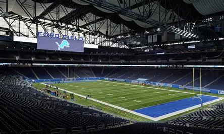

The Detroit Lions are a professional football team based in Detroit, Michigan. The team has a long history in professional football and has built a passionate fan base over the years.

Team History
The franchise began as the Portsmouth Spartans before moving to Detroit in 1934 and becoming the Detroit Lions. The team won multiple NFL championships during its early history.
Facts About the Lions
- The team is based in Detroit, Michigan.
- The Lions play their home games at Ford Field.
- The team's colors include Honolulu blue and silver.